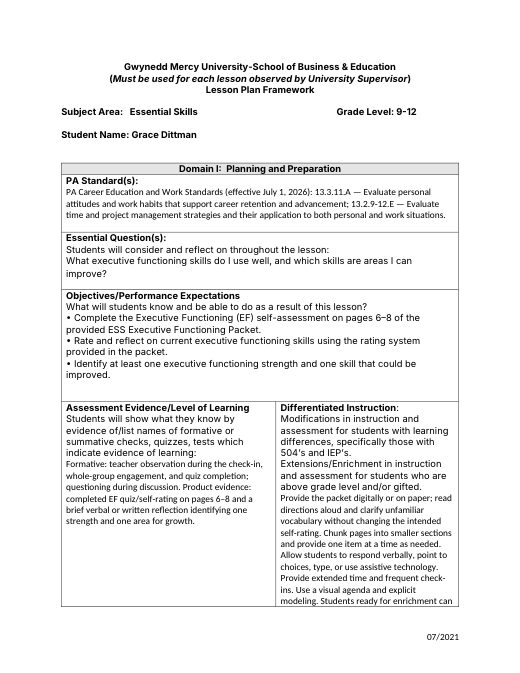
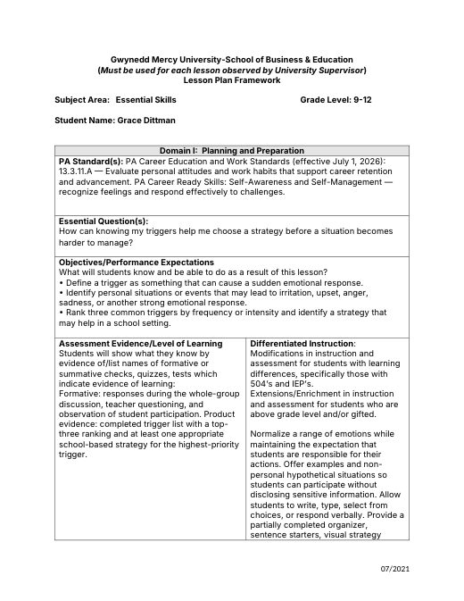
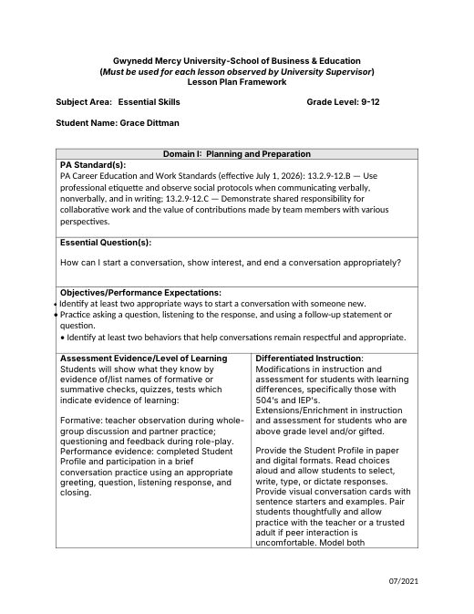
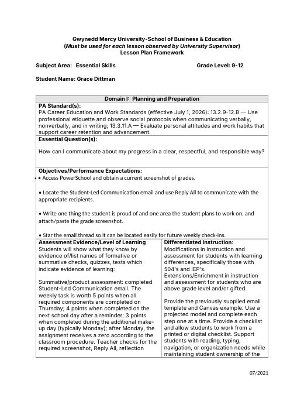
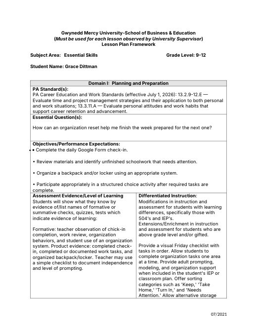
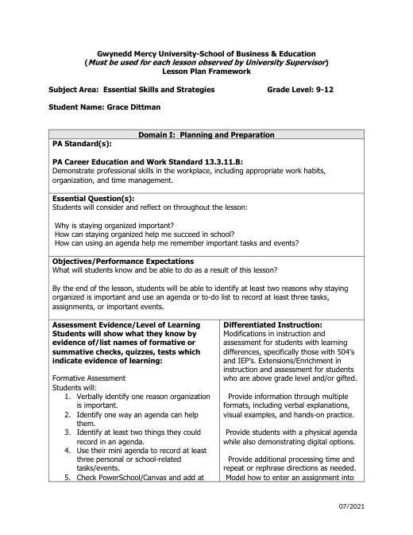
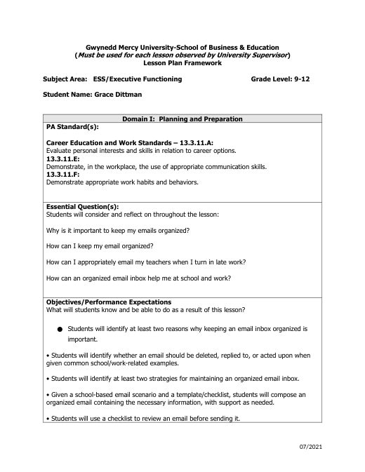

Grace Dittman
Student Teaching Portfolio
Block 2 Math
Block 3 Math
ESS
General Information
Lesson Plans
Student Teaching Journal
Résumé
Search
Home
›
ESS
›
weeks 1+2+3
›
Lesson Plans
Lesson Plans
← Activities
Managing Email: Teaching Script
email organization.pdf

Executive Functioning Self-Assessment
ESS9-14LessonPlan.docx

Identifying Triggers
ESS9-15LessonPlan.docx

Ice-Breakers & Student Profiles
ESS9-16LessonPlan.docx

Writing a Professional Email
ESS9-17LessonPlan.docx

Friday Organization Reset
ESS9-18LessonPlan.docx

Staying Organized: Keeping an Agenda
ESSAgendaLessonPlan.docx

Staying Organized: Managing Email
ESSEmailLessonPlan.docx
← Activities